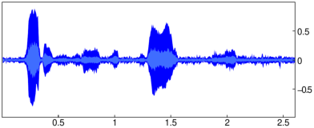

Example
To define a synthetic non-stationary signal, enter:
| f(t):=2t+cos(10t^2+100t)+cos(60t)+cos(40t)+cos(t^2+20t)+cos(t^2/2+5t)+1:;
plot(f(t),t=0..5) |
To discretize the signal, enter:
| synth:=apply(f,linspace(0,5,500)):; |
Now compute EMD and output the total number of intrinsic mode functions:
| imf,res:=emd(synth):; size(imf) |
To show the first four IMFs together with the residue and the
original signal, enter:
| imfplot(imf,residue=res,input=synth,count=4) |
The first IMF captures the high-frequency oscillations
which can be filtered by removing that component.
Effectively, you sum all but the first IMF and
also add the residue to obtain the filtered signal.
The first IMF can be discarded by using the tail command.
| listplot(res+sum(tail(imf))) |
